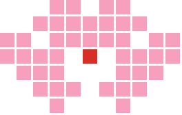
for Haruki × from Matthieu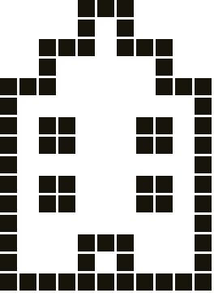
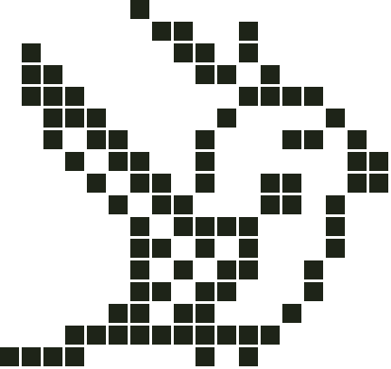
I know how much you love cockatiels, so I made you one
that fits right next to your laptop.
It hatched just for you. Feed it, give it scritches,
tuck it in at night and teach it a little song.
It will remember it, and whistle it back to you.
With love,
Matthieu
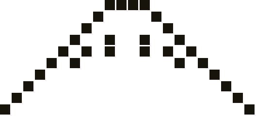
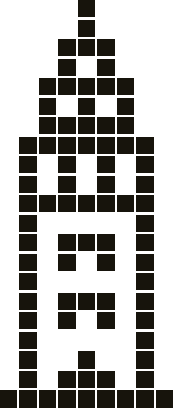
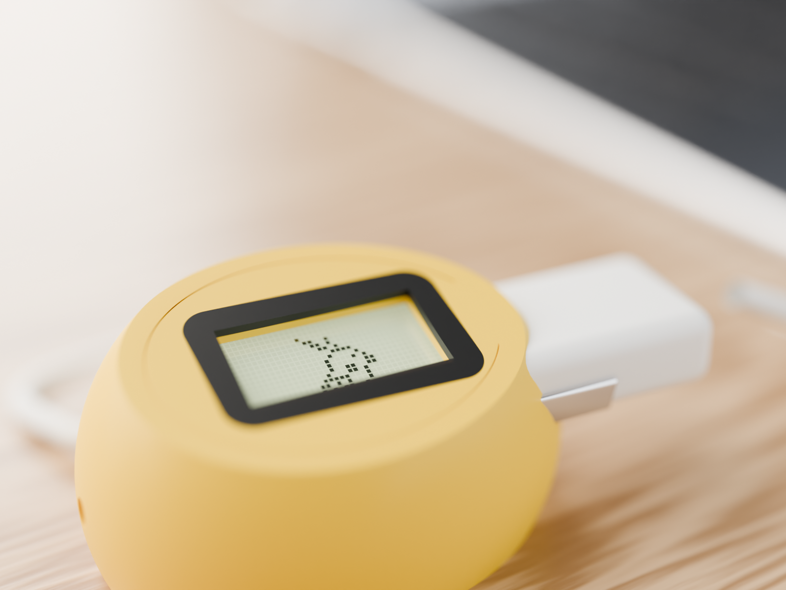
Inside this yellow egg lives a tiny cockatiel. It's awake whenever it's home with you, on your Wi-Fi, and sleeps at night, just like a real bird. When your MacBook is off, the screen goes dark, but your bird is fine.
The egg has no buttons. You take care of your bird with your iPhone: feeding, playing, cuddles, everything.
The egg, with your bird asleep inside · a cable for your MacBook · this little booklet.
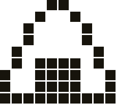
3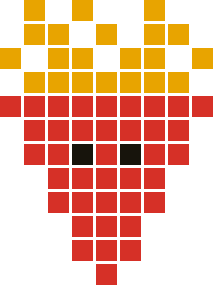
You only do this once. It takes about five minutes.
Put the cable in the little plug on the egg's nose, and the other end in your MacBook. An egg appears on the screen, fast asleep.
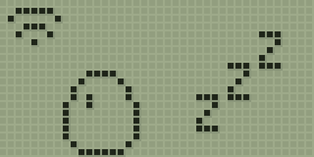
After a minute the egg shows a name (like OKAME-F3A) and then a password. On your iPhone, go to Settings → Wi-Fi (設定 → Wi-Fi), tap that name and type the password from the egg.
Your iPhone may say "No Internet Connection". That's normal: you're talking to the egg.
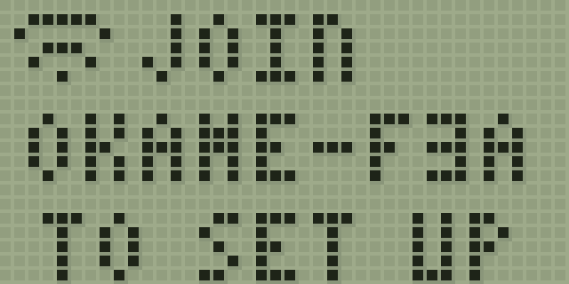
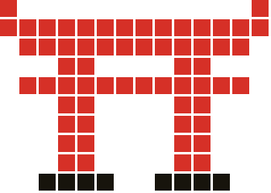
4A yellow page opens on your phone by itself. (If it doesn't, open Safari and type 192.168.4.1.) Tap Settings, pick your home Wi-Fi from the list, type its password and tap Add network. If your Wi-Fi has two names, pick the one without "5G". Your iPhone then goes back to your home Wi-Fi by itself.
The egg wiggles, cracks… and out pops your chick. Point your iPhone camera at this code to visit it, and give it a name.
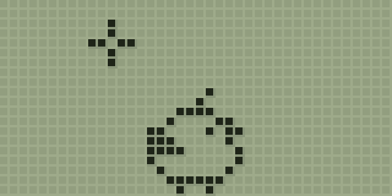
Taking it somewhere else? No problem. Away from your Wi-Fi it just naps. When it's home again it counts at most half a day, so it can't come to any harm. Maybe give it some seed.
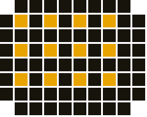
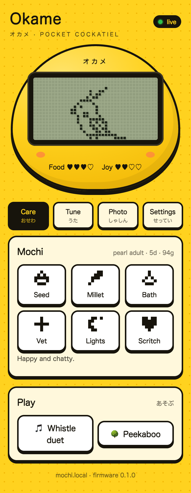
Scan the code on page 5 (or type okame.local in Safari). You'll see your bird live, with its food and joy hearts.
Tip: tap Share → Add to Home Screen (共有 → ホーム画面に追加) and your bird gets its own little icon.
| Seed: a proper meal. | |
| Millet: its favourite treat. Lovely, but it gets chubby! | |
| Bath: cleans up the little droppings. | |
| Vet: when it's sick. | |
| Cover cage: tuck it in at night. | |
| Scritch: head scratches (cockatiel people call them scritches!). |
| A blinking “!” It wants something. Have a look at its hearts. | |
| A little rain cloud. Hungry or bored. Some seed, a treat or a game will cheer it up. | |
| A blinking cross. It's not feeling well. Take it to the vet. | |
| Droppings. Time for a bath, before it gets sick. | |
| Zzz… It's sleepy. After 10 pm, tap Cover cage so it sleeps well. It wakes up by itself at 8. (While it's covered, tap Uncover to say hello.) |
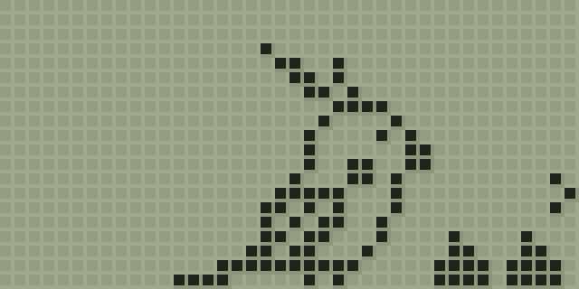
Droppings → bath
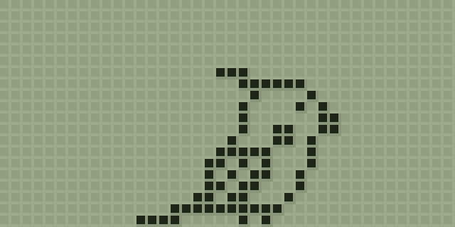
Sick → vet
Watch its crest, just like a real cockatiel: flat when it's relaxed, half up when it's curious, straight up when it's excited. When a friend's phone joins your Wi-Fi, it notices and pops up a curious “?”.
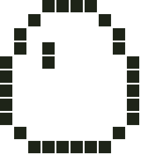
Egg2 minutes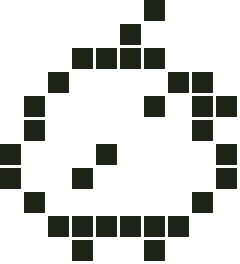
Chickday 1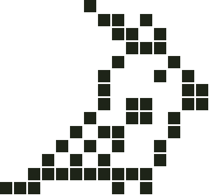
Youngsterdays 2–3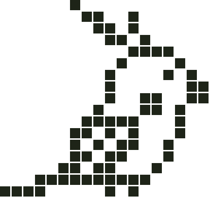
Grown-upfrom day 4The more love it gets, the prettier its grown-up feathers:
| ♥♥♥ | Lots of love and scritches: a beautiful pied cockatiel. |
| ♥♥ | Good care: a lovely pearl. |
| ♥ | So-so care: a classic grey. |
| ♡ | Forgotten too often: a bit messy. |
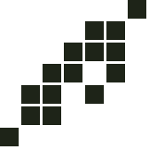
It's an easy-going bird: a few visits a day is plenty. Only if it's forgotten for three whole days does it fly off to find a friend. Then just tap Hatch a new egg.
Name: ______________________ Hatched on: ____ / ____ / ________
On the Care page, scroll down to Play and tap Whistle duet or Peekaboo. The game happens on the egg; your iPhone is the controller.
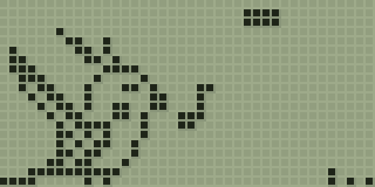
Your bird whistles a little pattern of short and long notes. Copy it with the · short and — long buttons. Win two of the three rounds!
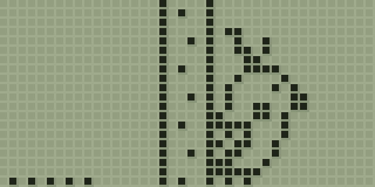
It hides behind a tree. (Hint: watch for its tail!) Tap Peek! the moment it pops out. It gets a bit faster every round.
Real cockatiels learn tunes by hearing them again and again, and so does yours.
Open Tune and tap up to eight notes (do, re, mi…). Press Play to hear it.
Tap Teach this new tune.
Once a day, tap Practise together. After three days it knows your song, and every now and then it whistles it all by itself.
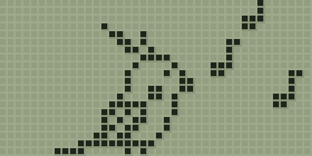
Open Photo for a picture of your bird. Press and hold it, then tap Save to Photos (「写真」に保存).
Scan this with your iPhone camera and tap Start. Okame can then send you its picture, you can feed it from anywhere, and little notes from Matthieu pop up on the egg.
| It keeps sleeping with a little Wi-Fi sign. It can't find your Wi-Fi. Wait a minute until it shows its name and password, and add your Wi-Fi again (steps 2 and 3). | |
| The page won't open. Check that your iPhone is on your home Wi-Fi, then scan the code on page 5 again. | |
| Settings asks for a code. Tap Show code on the egg, and type the four numbers from the egg's screen. | |
| It says UPDATE. It's getting new feathers! Leave it plugged in for a minute. | |
| No chirps on your phone? Switch off Silent mode (消音モード). |
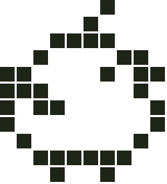
Still stuck? Ask Matthieu. He built it, so he owes it some care too ♥
Keep it dry and out of hot sun. Like a real bird, it sleeps from 10 at night until 8 in the morning.